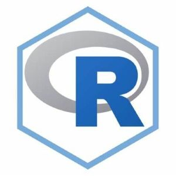

Applied machine learning to satellite data to detect and timestamp deforestation events in the Amazon rainforest, with a focus on plantations and farms in Peru and Brazil. This gave insight into land cover changes over time.

Traditional NBA position labels no longer capture players’ true roles. This project uses clustering on in-game stats to group players into new
archetypes; like stretch bigs, inside playmakers, or rebounders. By analyzing these groups, we can better understand team play styles, identify
strengths and weaknesses, and suggest ways teams might improve their roster composition.

Contributed to the development of an R package, "stateasy", designed for introductory statistics students. The package provides straightforward functions and documentation to perform z-tests,
t-tests, and simple linear regression, making it easier for beginners to apply these fundamental statistical methods.
Built an end-to-end Python machine learning pipeline to predict students’ math test scores using a simple dataset. Developed and compared multiple models,
implemented data ingestion, processing, training, and prediction pipelines with logging. Deployed the solution as a local Flask app, allowing users to input
features and receive real-time predictions.
Developed a song recommendation algorithm that leverages Spotify’s song metadata and clustering techniques to group similar tracks. Users input
a song, and the algorithm returns a list of musically related recommendations.